See the next 24 hours of your ICU. On machines you own.
ICU Lookahead is a bed board for one intensive care unit. At 07:00 it shows who is on life support now, who is likely to need it by tomorrow, and whether the unit has the machines and staff for that.
Team7 at the CIQ × NVIDIA × Lenovo Local AI Hackathon, Chicago, Nov 14–15, 2026. Runs on the two-machine cluster from one launch script, and on a laptop with made-up patients.
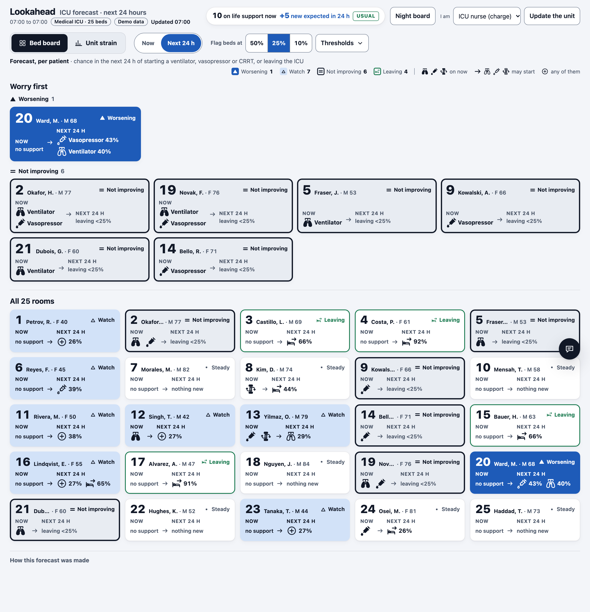
A small ICU finds out it is short when it already is
A small or rural hospital has one ICU, a few ventilators and dialysis machines, no data-science team and no cloud contract for patient data. When the unit runs short of a machine or a nurse, the nearest help is a transfer hours away.
ICU Lookahead answers one question each morning, in time to act on it: what will this unit need in the next 24 hours? It runs inside the building on two desk-size machines, so patient data never leaves.
- ICU
- The intensive care unit: the sickest patients in the hospital, one nurse to one or two beds.
- Life support
- A machine or drug that does the work of a failing organ.
- Ventilator
- Breathes for the patient through a tube.
- Vasopressor
- A drug drip that holds blood pressure up.
- CRRT
- Continuous dialysis, for kidneys that have stopped working.
- Leaving
- Well enough to move to a regular ward, which frees the bed.
How we used the hackathon stack
Two Lenovo machines, CIQ Fuzzball to run them, one NVIDIA model used as it is, and one model we trained.
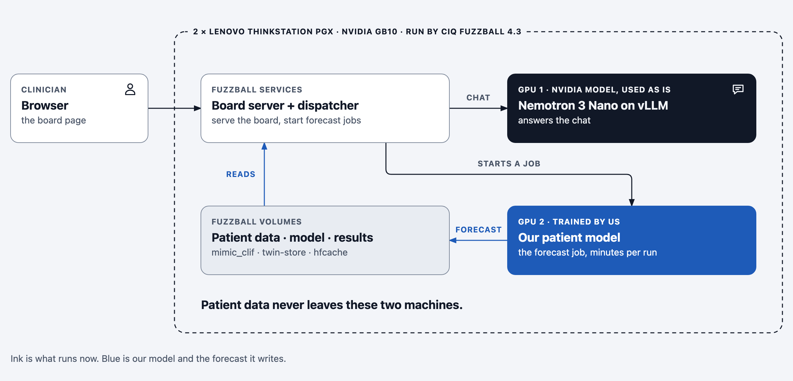
- Lenovo ThinkStation PGX × 2, each with an NVIDIA GB10The whole product runs on these two desk-size machines. Nothing is in the cloud.
- CIQ Fuzzball 4.3Workflows publish the code (
t7-code), stage the unit (t7-ward) and run each forecast (t7-forecast). Services keep the board server, the dispatcher and the chat model up (t7-twin). Three volumes:mimic_clif(patient data and the trained model, only read),hfcache(Nemotron weights) andtwin-store(code, the staged unit, results). The board's "Update the unit" button starts a Fuzzball job. - NVIDIA Nemotron 3 Nano on vLLMAnswers questions in the chat. We use it as it is; we did not train or tune it. It reads the forecast and predicts nothing.
- Our patient modelTrained by us on the two machines, across both GPUs, on MIMIC-IV in CLIF format. It runs in the forecast job on one GPU while Nemotron holds the other.
How it predicts
One pass over each patient's chart, then five small classifiers. Minutes on one GPU.
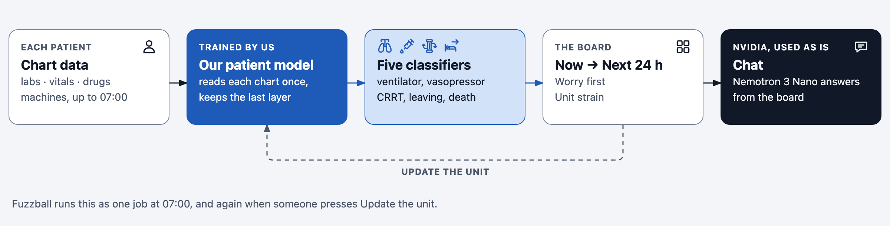
- It learns the language of the ICU.We trained the model to read a chart as a sequence of events (labs, vital signs, drugs, machines) and predict the next event, the way a language model predicts the next word.
- We take its last layer.At 07:00 the model runs once over each patient's chart so far. We keep the output of its last layer: one list of numbers that summarises the patient's state.
- Five small classifiers read that summary.One for each event that matters in the next 24 hours: starting a ventilator, starting a vasopressor, starting CRRT, leaving the ICU, and death. Each gives a percentage. They are fitted once in training, beside the model, on past patients whose outcomes are known; the forecast applies the saved file.
- The patients are added up.The board turns the percentages into what the unit will need, with a likely range.
Two models, two jobs
| Patient model | Chat model | |
|---|---|---|
| Who trained it | We did, on the two Lenovo machines | NVIDIA. We use Nemotron 3 Nano as it is |
| What it reads | Each patient's chart, as a sequence of events | The forecast, through tools |
| What it does | Gives the five predictions | Answers questions in plain words |
| What it never does | Talk to users | Predict anything about a patient |
| Where it runs | The forecast job, GPU 2 | An always-on service on vLLM, GPU 1 |
How well it predicts
On patients the classifiers never saw: cut 24 hours after ICU arrival, event in the next 24 hours, 95% ranges from 10,000 bootstrap samples. AUROC is the chance the model ranks a patient who had the event above one who did not (0.5 is a coin toss).
| Task | Held-out patients | Events | AUROC | AUPRC | Brier |
|---|---|---|---|---|---|
| Death | 12,759 | 198 (1.6%) | 0.930 (0.912–0.946) | 0.399 | 0.012 |
| Leaves to step-down | 12,052 | 508 (4.2%) | 0.885 (0.872–0.898) | 0.330 | 0.033 |
| CRRT start | 12,562 | 123 (1.0%) | 0.881 (0.850–0.910) | 0.155 | 0.009 |
| Leaves to ward | 9,077 | 2,723 (30.0%) | 0.799 (0.790–0.808) | 0.579 | 0.162 |
| Ventilator start | 7,264 | 226 (3.1%) | 0.780 (0.747–0.812) | 0.235 | 0.027 |
| Vasopressor start | 8,805 | 226 (2.6%) | 0.771 (0.739–0.802) | 0.152 | 0.023 |
The board's "Leaving the ICU" combines the two departure tasks. A retrospective check on MIMIC-IV, not a prospective or external test. Full table: RESULTS.md.
The board
Each bed shows now, then the next 24 hours. An event appears once it reaches the threshold the team sets, and every unit count carries its range.
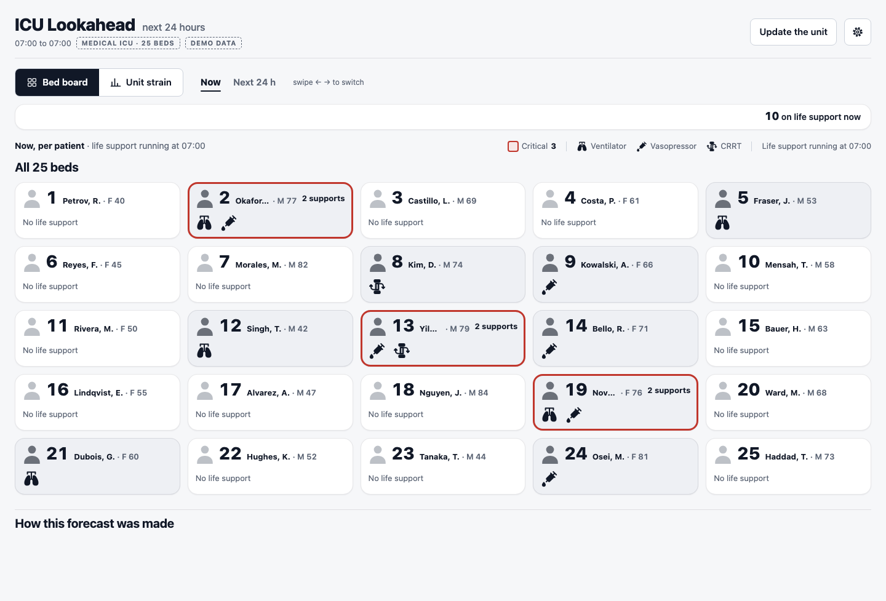
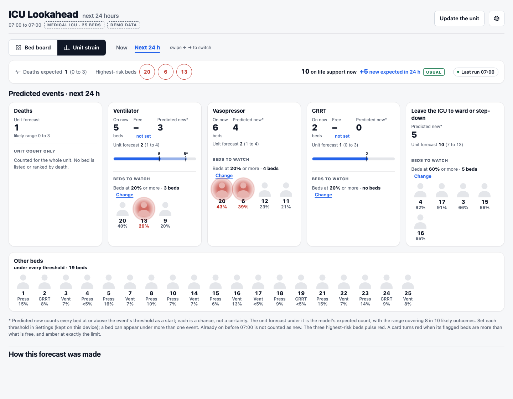
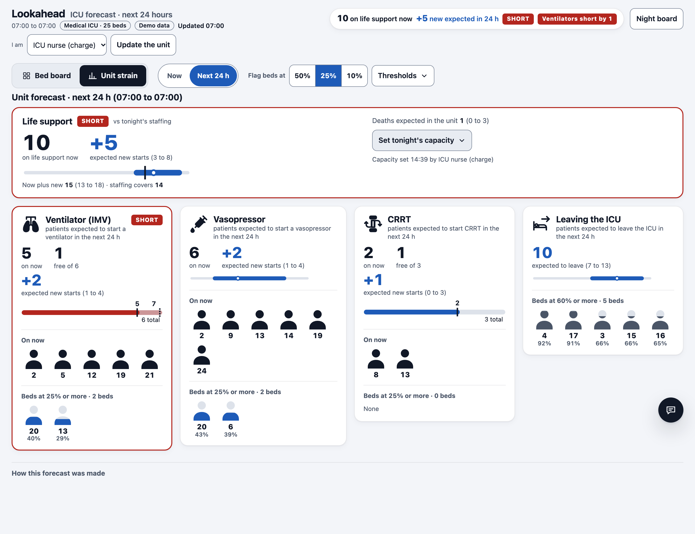
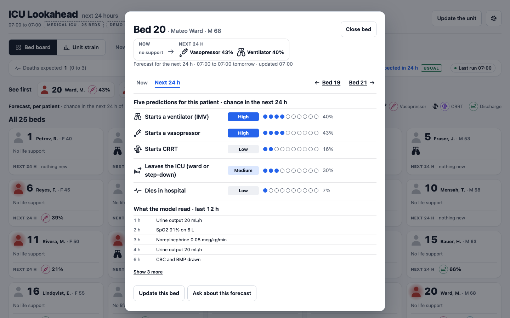
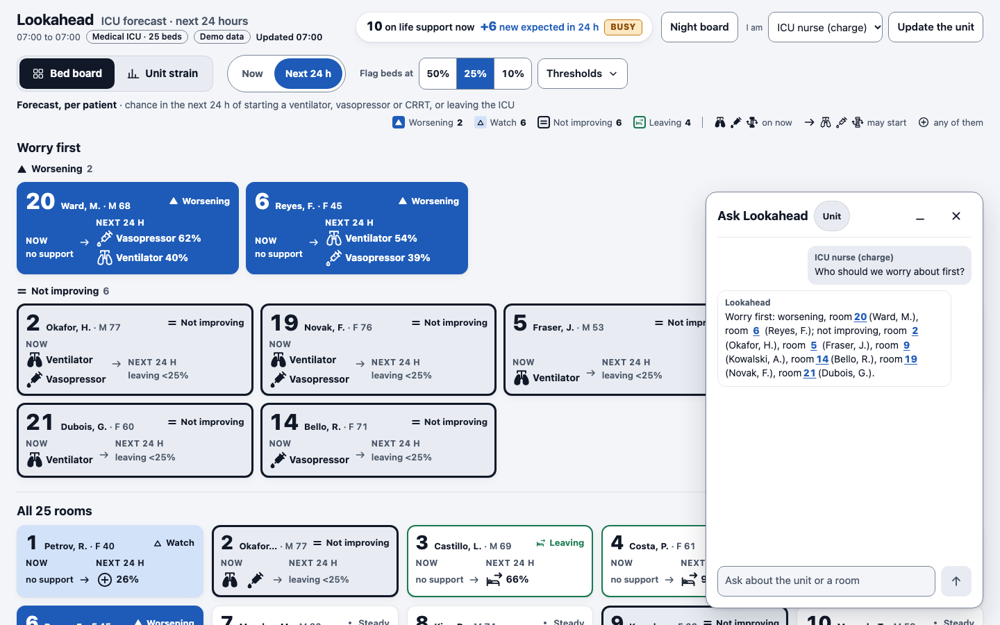
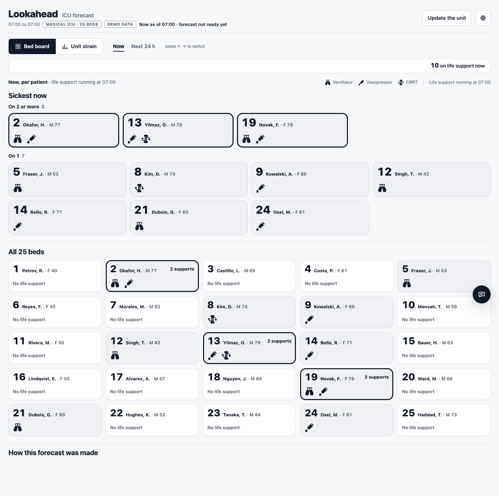
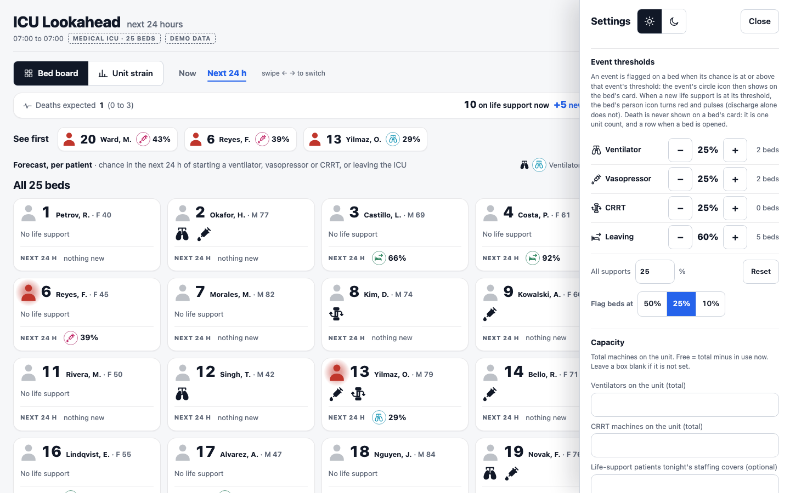
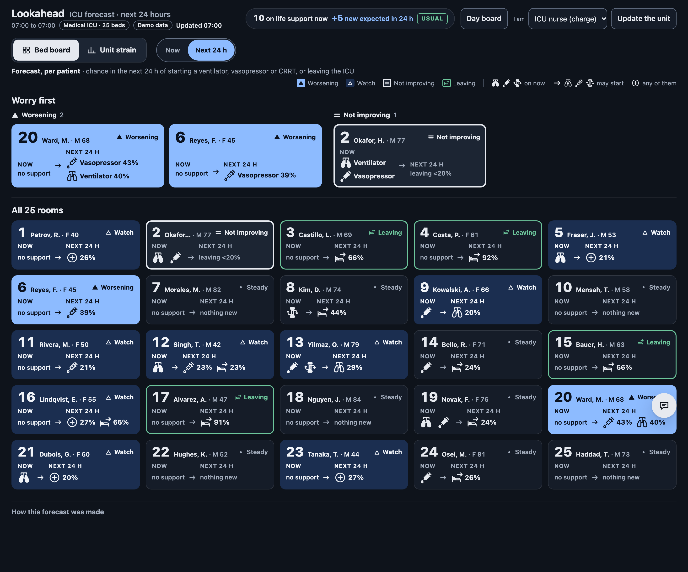
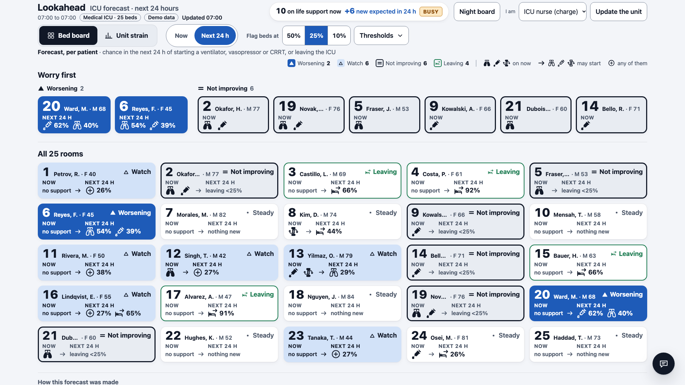
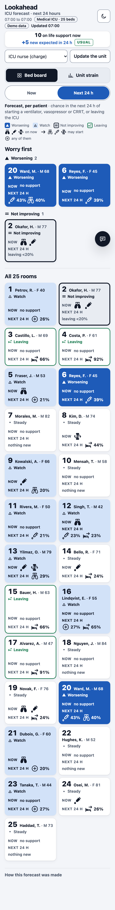
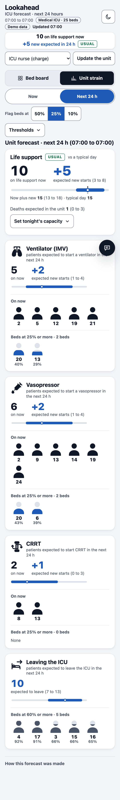
Architecture details
One service faces the browser. Everything else stays inside the two machines.
What talks to what
The browser talks to the board server. The board server reads the forecast files, asks Nemotron for chat answers, and asks the dispatcher to start or report runs. The dispatcher starts the forecast job, which runs our patient model on the second GPU. One volume is written, twin-store (code, the staged unit, the classifiers saved in training, results); two are only read, mimic_clif (demo patients and the patient model) and hfcache (Nemotron weights).
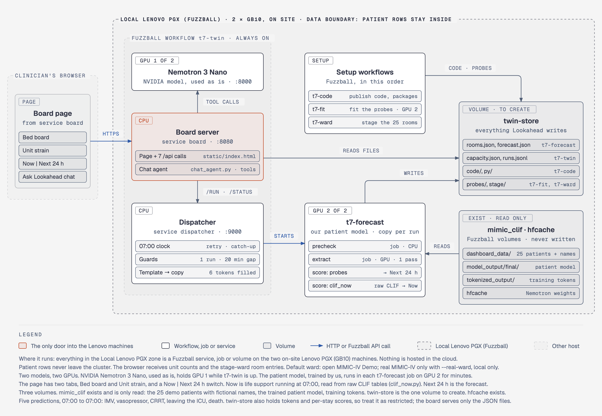
The API
Four reads and three writes. Every POST must carry a JSON content type and the header X-Lookahead: 1 from the same origin; anything else gets 403.
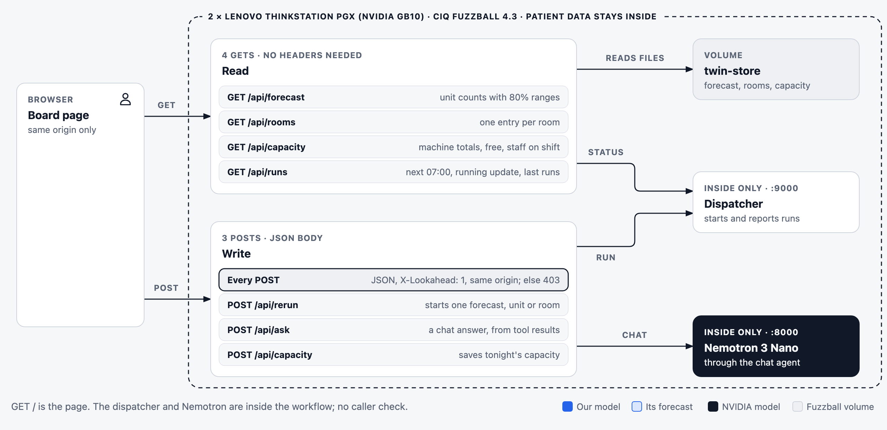
How the board's button starts a Fuzzball job
"Update the unit" sends one POST. The dispatcher allows one forecast at a time and 20 minutes between updates, fills a copy of the forecast workflow and starts it. The same run starts by itself at 07:00.
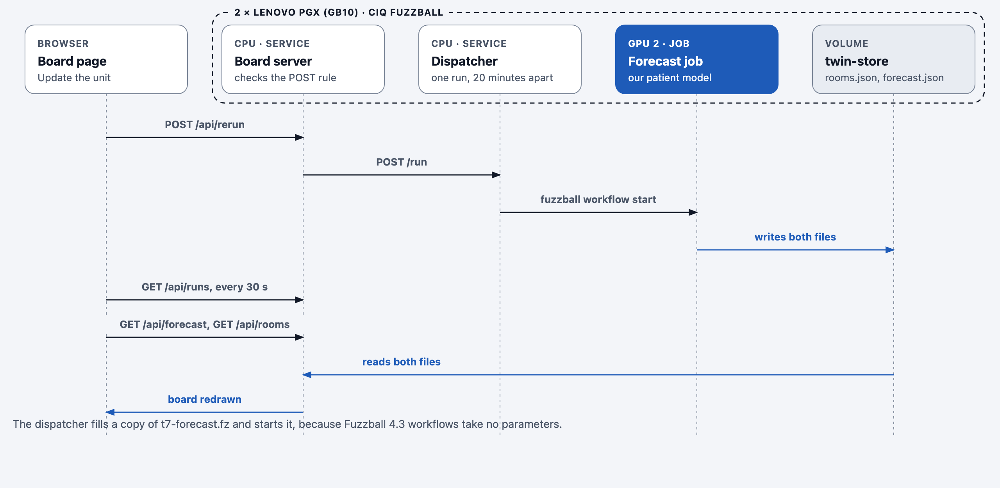
Run it on the cluster
One script runs the chain and prints the board's link. Each step is a Fuzzball workflow file.
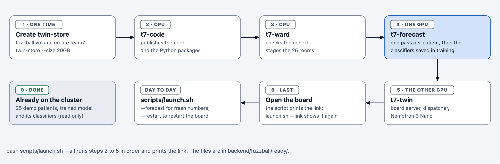
bash scripts/launch.sh # from backend/: start what is missing, wait for the board, print its HTTPS link bash scripts/launch.sh --forecast # run a fresh forecast first bash scripts/launch.sh --link # print the link of the running board bash scripts/launch.sh --restart # stop t7-twin and start it again bash scripts/launch.sh --all # publish code, stage the unit, forecast, then the board
- Once: create the volume the product writes to,
fuzzball volume create team7 twin-store --size 20GB.mimic_clif(patients, model) andhfcache(Nemotron weights) are only read.One time t7-code: publishes the pinned commit to/store/codeand the Python packages to/store/py.CPU- Once per new
twin-store, aftert7-codeand before the first forecast: stage the classifiers. In a job that mounts both volumes, copy/data/model_output/final/probe.joblibto/store/train/probe-final.jobliband write its provenance file/store/train/probe-final.meta.json(the two commands are in the runbook, section 4). No workflow does this step, andt7-forecaststops without both files.One time t7-ward: checks the cohort (ICU patients, cut 24 hours after ICU arrival) and stages the 25 rooms in/store/stage. Names on the tiles are generated per room number and fictional.CPUt7-forecast: a check, one model pass per patient, then scoring with the classifiers training saved (/store/train/probe-final.joblibandprobe-final.meta.json, staged in the step above). It writesrooms.json, thenforecast.json.t7-fitis only a fallback for when training's job 4 has not run.One GPUt7-twin: board server, dispatcher and Nemotron 3 Nano. The board's endpoint is plain HTTP inside the cluster; Fuzzball's proxy serves it as an HTTPS link.One GPU- The script waits for the board (up to 20 minutes while Nemotron loads), prints the link and opens it.The link
Steps, checks and the failures already met on the cluster are in the runbook. Two GPUs in total: Nemotron holds one, a forecast uses the other.
Run it on a laptop
python3 -m http.server 8000 # then open http://localhost:8000/mockups/command-center.html#synthetic (cd backend && uv run --extra dev --extra model pytest -q) (cd backend && uv run python app/board.py --forecast ../examples/forecast.json --static ../mockups/command-center.html --port 8080)
Decisions and docs
- HANDOFF.mdWhere things stand, who owns what, what to do next.
- ARCHITECTURE.mdWhat runs where, the tech stack, endpoints, run steps.
- DECISIONS.mdWhy it is built this way.
- USER_JOURNEY.mdThe 07:00 morning for each role: charge nurse, physician, pharmacy, respiratory therapy, bed manager.
- FRONTEND_SPEC.mdScreens, states and the data the board reads.
- DESIGN.mdThe design system for the board, the figures and this page.
- backend/README.mdThe backend, module by module.
- FUZZBALL_VALIDATION.mdWhat was checked against the live cluster, and the storage map.
- docs/submission/The one-sheet and the five-minute demo script.
- vaishvikc/ICU-TwinModel training.
Team and credits
Team7, CIQ × NVIDIA × Lenovo Local AI Hackathon, Chicago, Nov 14–15, 2026.
The cluster cards, bed figures, range bars, the flag-line toggle and the capacity model are Dema's (deetherese) design. Model training is Vaishvik's work in the ICU-Twin repo. Hardware: two Lenovo ThinkStation PGX with NVIDIA GB10. Orchestration: CIQ Fuzzball 4.3. Chat model: NVIDIA Nemotron 3 Nano on vLLM. Training data: MIMIC-IV in CLIF format.